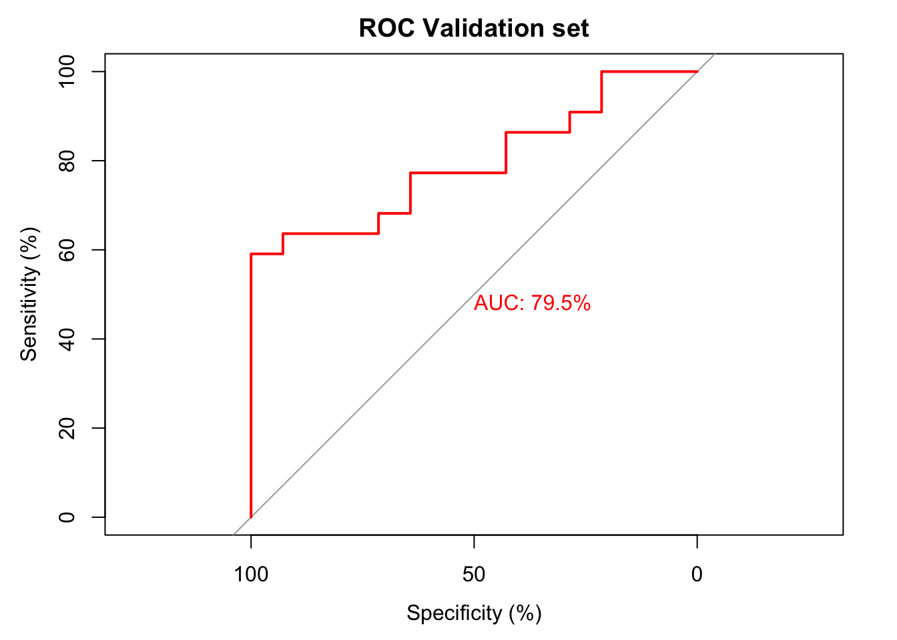
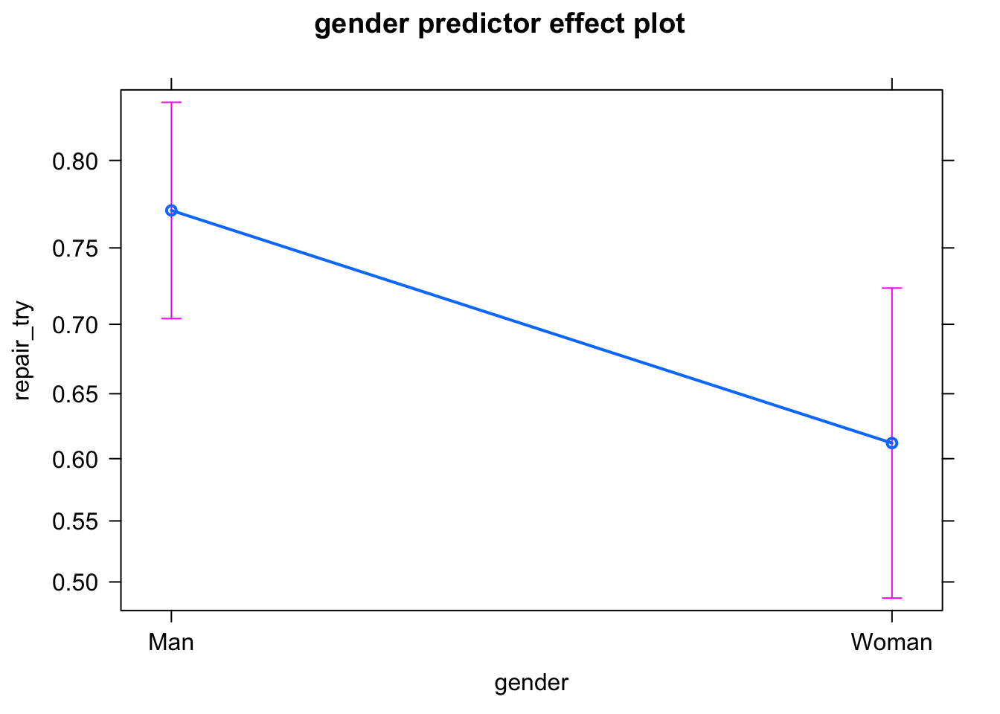
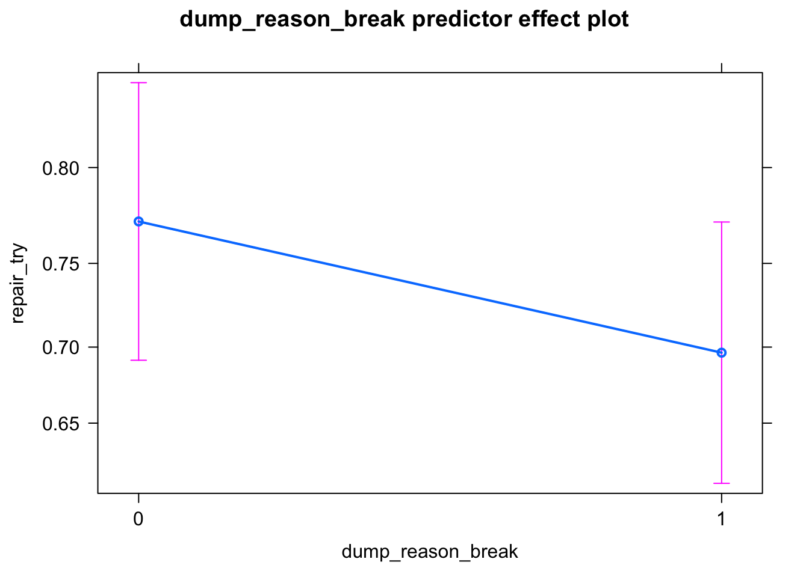
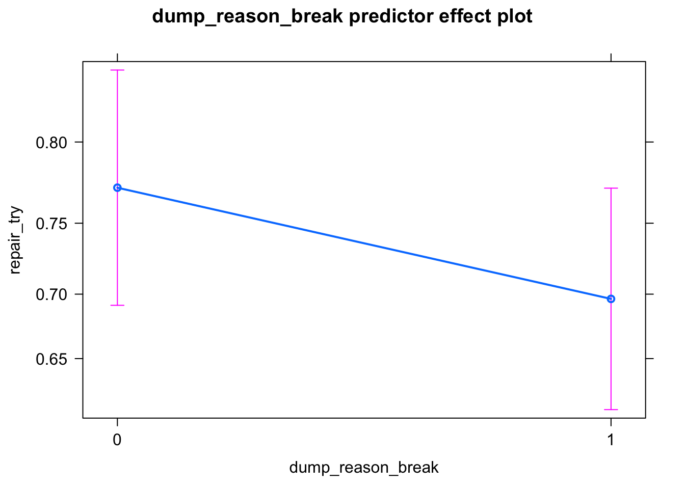
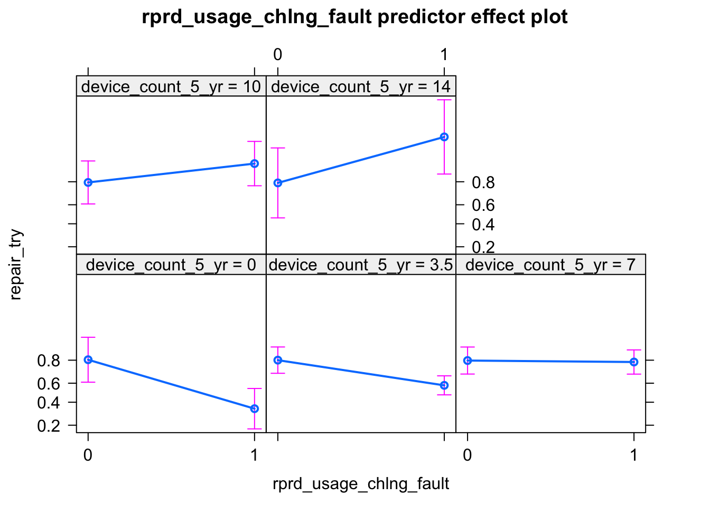
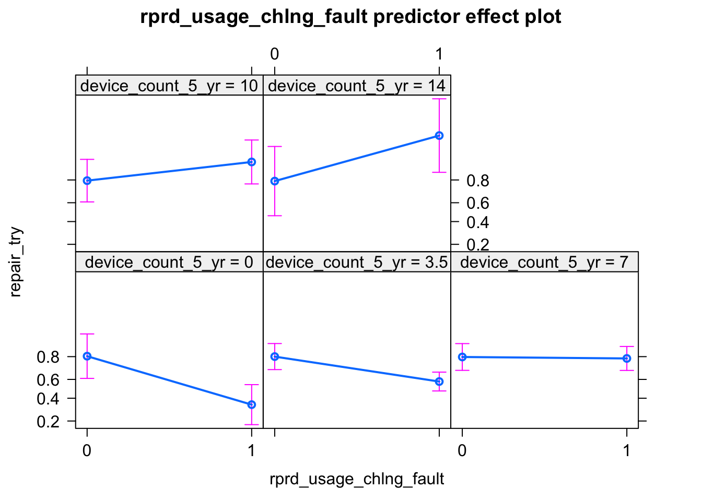
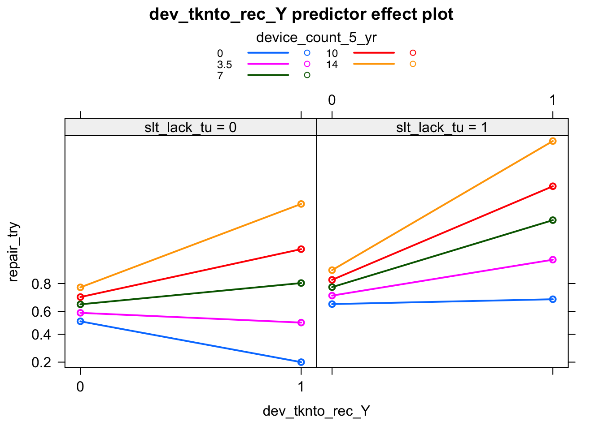

Chapter 4 Can we go beyond simple predictors?
## Warning: package 'DiagrammeR' was built under R version 4.0.1## Warning: package 'caret' was built under R version 4.0.1This time we have added the following Interactions:
device_count_5_yr:rprd_usage_chlng_fault
device_count_5_yr:dev_tknto_rec_Y
device_count_5_yr:did_with_device_econ
slt_lack_tu:dev_tknto_rec_Y
slt_lack_lang:rpr_missing_trait_gender+slt_lack_parts:rpr_missing_trait_gender+rpr_missing_trait_gender:dev_rec_chlng_hard_find+rpr_missing_trait_trust:dev_rec_chlng_hard_find+rpr_missing_trait_gender:did_with_device_econ
##
## Call:
## glm(formula = repair_try ~ gender + device_count_5_yr + dump_reason_break +
## slt_lack_tu + slt_lack_lang + slt_lack_parts + slt_lack_repairer +
## rprd_usage_chlng_fault + rpr_missing_trait_trust + rpr_missing_trait_gender +
## dev_tknto_rec_Y + dev_rec_chlng_hard_find + did_with_device_econ +
## device_count_5_yr:rprd_usage_chlng_fault + device_count_5_yr:dev_tknto_rec_Y +
## slt_lack_tu:dev_tknto_rec_Y + rpr_missing_trait_gender:did_with_device_econ,
## family = binomial, data = df)
##
## Deviance Residuals:
## Min 1Q Median 3Q Max
## -2.4798 -0.9052 0.3998 0.7900 1.8345
##
## Coefficients:
## Estimate Std. Error z value
## (Intercept) 0.08008 0.60611 0.132
## genderWoman -0.76520 0.30643 -2.497
## device_count_5_yr -0.10481 0.08528 -1.229
## dump_reason_break1 -0.39397 0.27349 -1.441
## slt_lack_tu1 0.60696 0.34801 1.744
## slt_lack_lang1 0.66268 0.38551 1.719
## slt_lack_parts1 0.82522 0.28030 2.944
## slt_lack_repairer1 0.64544 0.31311 2.061
## rprd_usage_chlng_fault1 -2.08754 0.63395 -3.293
## rpr_missing_trait_trust1 0.72791 0.28796 2.528
## rpr_missing_trait_gender -0.55054 0.79032 -0.697
## dev_tknto_rec_Y1 -1.44058 0.80486 -1.790
## dev_rec_chlng_hard_find1 -1.06221 0.41026 -2.589
## did_with_device_econ1 0.74643 0.35720 2.090
## device_count_5_yr:rprd_usage_chlng_fault1 0.28921 0.11153 2.593
## device_count_5_yr:dev_tknto_rec_Y1 0.31305 0.14984 2.089
## slt_lack_tu1:dev_tknto_rec_Y1 1.61188 0.73681 2.188
## rpr_missing_trait_gender:did_with_device_econ1 1.68981 0.96570 1.750
## Pr(>|z|)
## (Intercept) 0.894891
## genderWoman 0.012520 *
## device_count_5_yr 0.219066
## dump_reason_break1 0.149713
## slt_lack_tu1 0.081142 .
## slt_lack_lang1 0.085620 .
## slt_lack_parts1 0.003239 **
## slt_lack_repairer1 0.039267 *
## rprd_usage_chlng_fault1 0.000992 ***
## rpr_missing_trait_trust1 0.011478 *
## rpr_missing_trait_gender 0.486053
## dev_tknto_rec_Y1 0.073476 .
## dev_rec_chlng_hard_find1 0.009622 **
## did_with_device_econ1 0.036644 *
## device_count_5_yr:rprd_usage_chlng_fault1 0.009512 **
## device_count_5_yr:dev_tknto_rec_Y1 0.036686 *
## slt_lack_tu1:dev_tknto_rec_Y1 0.028696 *
## rpr_missing_trait_gender:did_with_device_econ1 0.080146 .
## ---
## Signif. codes: 0 '***' 0.001 '**' 0.01 '*' 0.05 '.' 0.1 ' ' 1
##
## (Dispersion parameter for binomial family taken to be 1)
##
## Null deviance: 448.21 on 350 degrees of freedom
## Residual deviance: 349.44 on 333 degrees of freedom
## AIC: 385.44
##
## Number of Fisher Scoring iterations: 5\[ \begin{aligned} \log\left[ \frac { P( repair\_try = 1 ) }{ 1 - P( repair\_try = 1 ) } \right] &= 0.08 - 0.77(gender_{Woman}) - 0.1(device\_count\_5\_yr)\ - \\ &\quad 0.39(dump\_reason\_break) + 0.61(slt\_lack\_tu) + 0.66(slt\_lack\_lang)\ + \\ &\quad 0.83(slt\_lack\_parts) + 0.65(slt\_lack\_repairer) - 2.09(rprd\_usage\_chlng\_fault)\ + \\ &\quad 0.73(rpr\_missing\_trait\_trust) - 0.55(gender_{rpr\_missing\_trait\_} \times rpr\_missing\_trait\_gender) - 1.44(dev\_tknto\_rec\_Y)\ - \\ &\quad 1.06(dev\_rec\_chlng\_hard\_find) + 0.75(did\_with\_device\_econ_{1}) + 0.29(device\_count\_5\_yr \times rprd\_usage\_chlng\_fault)\ + \\ &\quad 0.31(device\_count\_5\_yr \times dev\_tknto\_rec\_Y) + 1.61(slt\_lack\_tu \times dev\_tknto\_rec\_Y) + 1.69(gender_{rpr\_missing\_trait\_} \times rpr\_missing\_trait\_gender_{did\_with\_device\_econ1} \times did\_with\_device\_econ_{rpr\_missing\_trait\_gender})\ + \\ &\quad \epsilon \end{aligned} \]
The AIC Value was Initially 436.
After Stepwise Regression, it came down to 395.
After Adding the Interaction elements, it is now 385
The 10 fold cross validation accuracy is below:
cross_validated_model <- boot::cv.glm(df,glmfit = backward.model,K = 10)
print((1-cross_validated_model$delta[1])*100)## [1] 80.74644Lets also look at the ROC curve for the the fitted logistic regression model: (A better fit than model without interaction)
null.model <- glm(repair_try~1,family = binomial(),data = df)
Generate_RoC(full_model = full.model,null_model = null.model,df = df,direction = "B",outcome = "repair_try")## [1] 351## Setting levels: control = 0, case = 1## Setting direction: controls < cases With a good fit in the model, lets diagnosis our model parameters for multicolineariy. If the VIF (Variance Inflation Factor) is \(>10\) for any predictor, we might be in trouble.
## MIN IVF: 1.054682## MAX IVF: 6.98304## MEAN IVF: 2.6841Values \(>0\) means odd\(>1\) So, that accounts more for YES than NO.
device_count_5_yr : fear of faulty device
device_count_5_yr: device ever taken to RECYCLER
lack_of_tutorial : device ever taken to RECYCLER
gender_adversary_of_repairers :Have you did anything economic with your device
Lets look at the effects plot to better understand the individual effects of each predictor:
#librarian::shelf(effects)
for (n in c(
"gender",
"device_count_5_yr"
,"dump_reason_break"
,"slt_lack_tu"
,"slt_lack_lang"
,"slt_lack_parts"
,"slt_lack_repairer"
,"rprd_usage_chlng_fault"
,"rpr_missing_trait_trust"
,"rpr_missing_trait_gender"
,"dev_rec_chlng_hard_find",
"did_with_device_econ"
,"dev_tknto_rec_Y"
)){
if(n=="dev_tknto_rec_Y")
{
print(par(mfrow=c(2,5)))
print(plot(effects::predictorEffect(n,backward.model),lines=list(multiline=TRUE)))
break()
}
#print(n)
print(plot(effects::predictorEffect(n,backward.model)))
} 



 



## $mfrow
## [1] 1 1